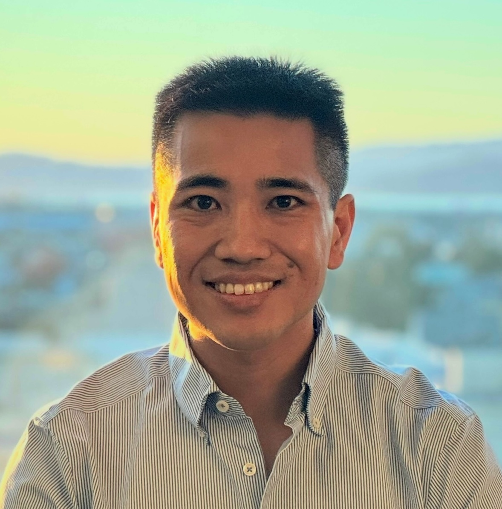

Yume Hoshijima
Hello! I’m Yume (pronounced “you may”). I’m an attorney at Sher Edling LLP in San Francisco, where I represent states, local governments, and other public entities across the United States in high-impact, public-interest climate change and environmental litigation.
I was born in Japan and grew up in San Diego. I majored in Environmental Studies at Yale (BK '15), then stayed there to study climate and environmental law (JD/MEM '19). During graduate school, I participated extensively in clinical work, served as an Articles Editor of the Yale Law Journal, and was an inaugural John Kerry Fellow.
Then, I clerked for the Honorable John A. Kronstadt of the U.S. District Court for the Central District of California and the Honorable Scott M. Matheson, Jr. of the U.S. Court of Appeals for the Tenth Circuit before joining Sher Edling.
In my spare time, I spend lots of time outdoors: I train for standard-distance triathlons, and I explore the Bay Area’s numerous parks. I’m a news junkie who prizes and hoards interesting and occasionally useful information. If not for my belief that today’s grave environmental problems require legal responses, I would have been an aerospace, civil, or mechanical engineer: I’m fascinated by complicated machines, civil infrastructure, and technology in general.
I believe that the rule of law is of paramount importance and that attorneys have a sacrosanct obligation to uphold our civic institutions and the quality of justice.
Please don’t hesitate to get in touch at yume.hoshijima [at] aya.yale.edu.